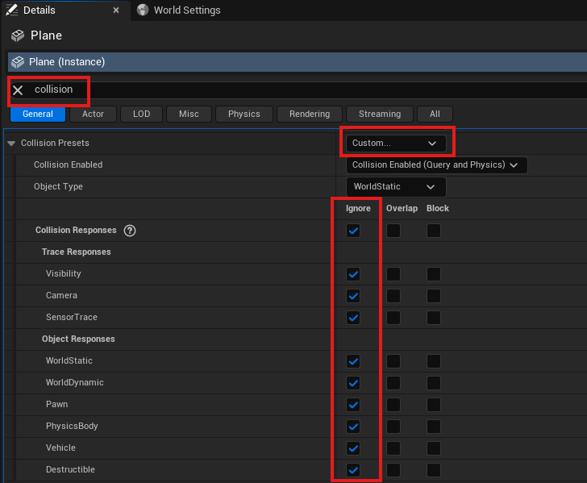
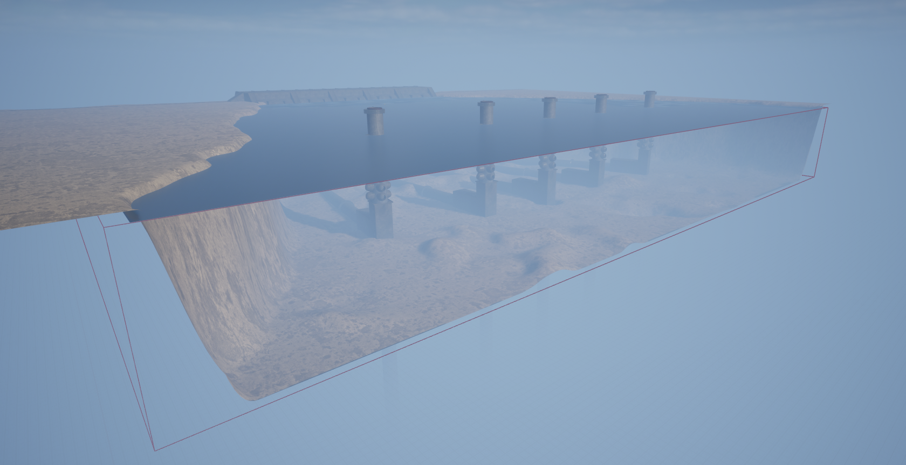
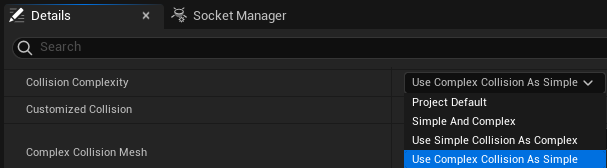
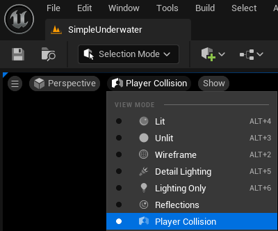

Creating a Custom Level
For a custom level in HoloOcean, you must make a level using Unreal Engine. See the Unreal Engine documentation for more information on saving and creating a new level.
There are 2 main aspects to our HoloOcean levels: the landscape, and the water.
Landscape
For help creating your own landscape, please reference Unreal Engine’s landscape documentation. The documentation explains how to use the Landscape Mode within the editor, as well as how to apply and create materials for your landscape.
Note
As you create a landscape, please note that the water level is at z=0. The landscape must be below z=0 in order for our underwater agents to work as expected.
To aquire materials or assets for your landscape, you can purchase materials or find some free ones at Fab. Quixel offers many free assets and materials.
If you wish to enclose the sides of your environment, you can either place assets like walls or sculpt the edges of the landscape to be taller. Both examples can be seen in the SimpleUnderwater environment.

Water
The Unreal Engine Water plugin is not compatible with HoloOcean and will not work. Instead, to achieve an underwater appearance, you will need to place a water plane, ExponentialHeightFog, and a PostProcessVolume within your environment. Please note the following are suggested settings, and there may be others you would want to consider adjusting for your level.
Water Plane
For the water plane, place a plane actor at z=0. Change the material to be any water-like material. You will also need to change the collision settings so that vehicles can pass through the plane. In the Details panel, search for “collision” and set custom collision presets to ignore all options.
Fog
If you created a basic level, it should already come with an ExponentialHeightFog located in the Lighting folder in the level outliner. Otherwise, go to Window ➡ Env. Light Mixer ➡ Create Height Fog. As a note, the other lighting options through the Env. Light Mixer should also be added to the level, although no changes to them need to be made.
Adjust the ExponentialHeightFog “Fog Distance”, “Fog Height Fallout”, and “Fog Inscattering Color” in the details panel until it fits your needs. For example, the Dam environment has a “Fog Density” of 0.4, “Fog Height Falloff” of 0.2, and “Fog Inscattering Color” of Hex sRGB B2D1FFFF.
PostProcessVolume
For the PostProcessVolume, go to Place Actors ➡ Volumes ➡ Post Process Volume and drag it into your level. Adjust the scale of the volume to fit your entire underwater area. To adjust the color of the volume, go to the Details pannel ➡ Color Grading ➡ Misc ➡ “Scene Color Tint”. Blue to green colors are best, and the Dam environment has the “Scene Color Tint” set to Hex sRGB AAD9C8FF.
As seen in the Dam environment, the water plane is a separate landscape located at z=0. The red outline box that surrounds the environment is the PostProcessVolume.
Note on Collision Settings for Objects and Sonar
Sonar simulation relies upon the collision mesh for objects when generating the octree. If the collision mesh of an object is coarser than the visual mesh then the representation of that object in a sonar image will be inaccurate. This issue can be addressed for the objects by using the Unreal Engine editor and setting the “Collision Complexity” option in the details section of the static mesh editor to “use complex collision as simple”.
You can verify the shape of the collision mesh by changing the view mode to “Player Collision” in the level or in the static mesh editor.
